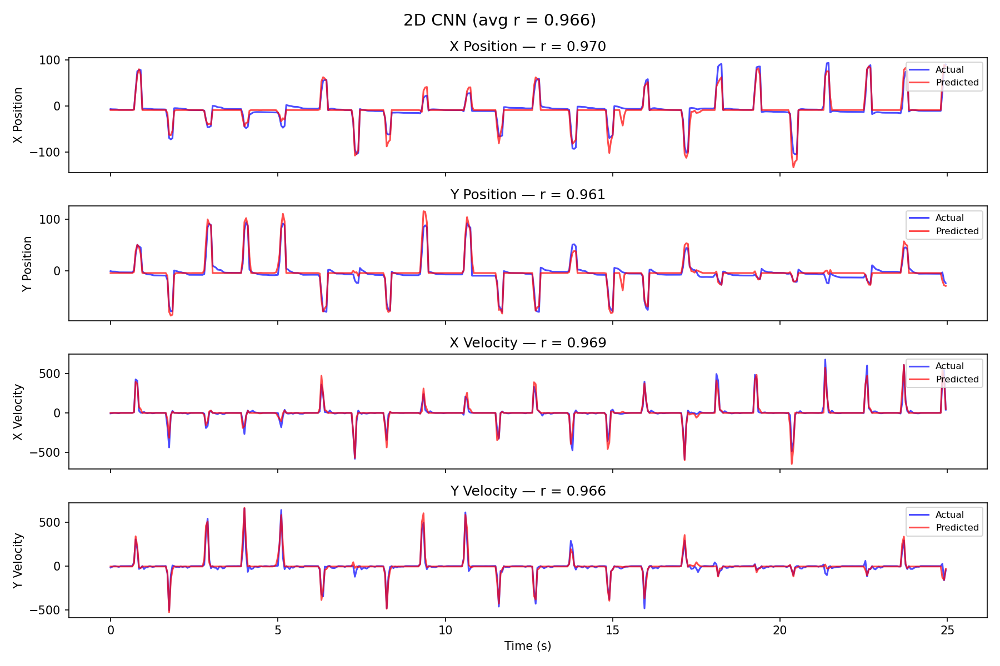

A controlled comparison of MLP · 2D CNN · LSTM · Transformer decoders for intracortical brain–computer interfaces
Nick Matton · BME 517, University of Michigan
PyTorch95-ch motor-cortex spikes5-seed GPU sweepvalidated on Neural Latents Benchmark
Roadmap
The problem & the data — what we decode, and what makes it hard
Four architectures — MLP, 2D CNN, LSTM, Transformer
The training experiment — protocol, and a multi-seed sweep
Results — what wins, and why
Reading the numbers honestly — limitations & next steps
Why neural decoding
Intracortical BCIs read motor cortex to restore movement and control for people
with paralysis — moving a cursor, a robotic arm, or a reanimated limb.
The decoder is the core ML component: it turns neural activity into intended
movement, in real time, continuously.
This project asks a focused question:
Given the same data and training budget, which decoder
architecture best maps spikes → hand kinematics, and what drives the difference?
The task
At each 50 ms time bin, predict the hand kinematics from neural activity:
95 spike counts (+ recent history)→decoder→X / Y position X / Y velocity
Supervised regression, 4 continuous targets.
Metric: Pearson correlation r between predicted and actual, per target, then averaged. 1.0 = perfect tracking.
The data
contdata95.mat — 31,413 contiguous time bins @ 50 ms ≈ 26 minutes of recording
Inputs: 95 channels of integer spike counts (0–21 per bin) — sparse, discrete, noisy
Targets: 4 kinematics — X/Y position and X/Y velocity of the hand
Signal
Type
Range
Std
Spike counts (95 ch)
integer counts
0 – 21
~1.3 mean
X / Y position
continuous
≈ ±100
~28 / ~25
X / Y velocity
continuous
≈ ±700
~111 / ~99
What makes it hard (and easy)
Hard:
Spike counts are sparse & noisy, 95-dimensional
Mapping to smooth kinematics is nonlinear and temporal
Easy (be careful):
It's a reaching task — rest near center, reach, return
Position is slowly varying / highly autocorrelated → easy to track once you have velocity
Neighboring bins are nearly identical
These "easy" properties inflate correlation — we'll return to this when reading the results.
Preprocessing & splits
Temporal 70 / 15 / 15 split — train = first 70% of time, then val, then test.
Never shuffled: adjacent bins are correlated, so random splitting would leak the future into training.
Z-score the spike counts using training statistics only (no peeking at val/test).
Context windows: sequence models see a 32-bin (1.6 s) sliding window; the MLP sees a single bin.
I verified the windowing introduces no target leakage across the split boundaries.
Four architectures — a spectrum of how they use time
Model
Temporal context
Core idea
MLP
none (1 bin)
fully-connected baseline
2D CNN
32-bin window
window as an image; local spatio-temporal filters
LSTM
32-bin window
recurrent memory over the sequence
Transformer
32-bin window
self-attention over the sequence
Same inputs, same targets, same training recipe — so differences are architectural.
1 · MLP — single-bin baseline
95→FC 64→FC 64→FC 128→FC 128→FC 256→4
Five hidden fully-connected layers; BatchNorm + ReLU + Dropout 0.3 after each.
Decodes from a single 50 ms bin — no temporal context at all.
Purpose: a strong, cheap baseline. How far can instantaneous firing alone get you?
Predicted (red) tracks actual (blue) almost exactly across all four targets — r = 0.986.
The informative failure: 2D CNN

Velocity panels (bottom) track well (~0.97); position panels (top) lag and drift (~0.6–0.74).
Insight 1 — temporal context is the biggest lever
Both sequence models (~0.98) clearly beat the single-bin MLP (0.88) and the 2D CNN (0.84).
The gain is concentrated in position: MLP Y-pos 0.81, 2D CNN Y-pos 0.67 → LSTM/Transformer ≈ 0.98.
Intuition: position is the integral of velocity — recovering it well needs memory over time, which the MLP and pooling-CNN lack.
A single 50 ms snapshot already decodes velocity well; position is where 1.6 s of context pays off.
Insight 2 — positional encoding makes the Transformer work
Self-attention is permutation-invariant: with no positional signal, the encoder sees the 32-bin window as an unordered set.
No positional encoding → r = 0.74
+ sinusoidal positional encoding → r = 0.982
It's an architectural necessity, not a tuning knob: a temporal signal demands that the model know when each input occurred.
With it, the Transformer essentially matches the LSTM.
Insight 3 — position vs velocity, and variance
The 2D CNN is excellent on velocity (~0.97) but weak on absolute position (~0.60–0.74) — global average pooling discards position; velocity is local and survives.
It's also the most seed-sensitive model: avg std ±0.047 (X-pos std ±0.118) vs ±0.000–0.006 for the others.
Reporting mean ± std surfaces this instability — a single lucky 2D CNN run (0.90) would have badly misrepresented it.
Reading the numbers honestly
Why r ≈ 0.98 isn't as wild as it looks: position is slowly varying / autocorrelated, and stride-1 windows make adjacent samples near-duplicates — both inflate correlation.
No leakage: verified the temporal split has no target overlap across boundaries.
What the std does and doesn't say: all seeds share one split, so std measures optimization stability, not generalization. The LSTM's ±0.000 is the tell — stable training, not zero uncertainty about a new session.
Validated on a public benchmark
To check the decoders are genuinely good — not just riding one session's autocorrelation —
I re-ran the two sequence models on the Neural Latents Benchmark: standardized
datasets (NWB / DANDI), official held-out split, metric = velocity R², two different
monkeys.
Model
MC_RTT (Indy, random-target)
MC_Maze (Jenkins, maze reach)
LSTM
0.602 ±0.007
0.855±0.003
Transformer
0.634±0.006
0.833 ±0.005
Both land in/near published ranges (RTT ≈ 0.60–0.70, Maze ≈ 0.88–0.91) —
so the skill is real, not an autocorrelation artifact. Neither model dominates across datasets
(Transformer wins RTT, LSTM wins Maze).
vel R², mean ± std over 5 seeds, run on a Lambda A10 GPU.
Live decoding demo
Interactive replay of real held-out predictions on real spike data — switch architectures and watch each one decode the hand trajectory in real time.